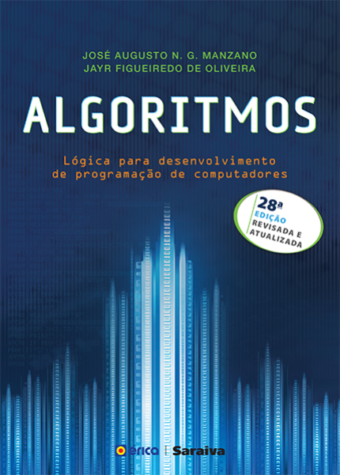

.png "Home")
|
Livrarias Aviaras |
| Home | Literatura | Técnicos | Quadrinhos | Contato |
 |
Autor: Jon Duckett
Tema: Programação em HTML e CSS Editora: Alta Books Descrição: Se você quer projetar, construir do zero ou ter mais controle sobre um site existente, este livro lhe ajudará a criar conteúdos atrativos e amigáveis. Sabemos que código pode ser um pouco intimidador, mas dê uma olhada e veja como este guia difere dos livros de programação mais tradicionais. Toda as páginas apresentam um novo tópico e maneira simples e visual, com explicações diretas acompanhadas das amostras de código. Você encontrará ajuda em como organizar e projetar as páginas do seu site para que possa criar websites fantásticos e fáceis de usar. Não é necessário ter experiência! Site de compra:Html e Css - Projete e Construa Websites |
 |
Autor: Jon Duckett
Tema: Programação e Javascript e Jquary Editora: Alta Books Descrição: Bem-vindo ao ensino de JavaScript e jQuery. Você é iniciante em JavaScript, ou adicionou scripts a sua página web mas quer entender melhor como tudo funciona? Então este livro é para você. Não mostraremos apenas como ler e escrever em JavaScript, mas também ensinaremos o básico sobre programação de computadores de forma simples e visual. Tudo o que você precisa é entender um pouco sobre HTML e CSS. Este livro ensinará como tornar seus websites mais interativos, atraentes, e funcionais. Isso acontece ao combinar teoria de programação com exemplos que demonstram como o JavaScript e o jQuery são usados em sites populares. De forma rápida, você será capaz de pensar e programar como um profissional. Site de compra:Javascript e Jquery - Desenvolvimento de Interfaces Web Interativas |
|  |
Autores: Jayr Figueiredo de Manzano, Jose Augusto N. G. Oliveira
Tema: Algoritimos Editora: Érica Descrição: A obra aborda aspectos históricos, como origem, fundamentação, breve análise da programação estruturada em comparação com a programação orientada a objetos, resumo dos termos usados e discussão sobre polimorfismo versus poliformismo. Trata também de classe, objeto, atributo, método, herança e encapsulamento, com alguns exemplos de aplicação para auxiliar a compreensão. Nesta vigésima oitava edição, foram acrescentados a implementação de um exemplo de uso de matriz em estilo dinâmico e o exemplo do programa calculadora codificado na linguagem de programação D. É indicada a estudantes de programação de computadores interessados em aprender e usar técnicas de programação com foco na norma ISO Site de compra:Algoritmos - Lógica Para Desenvolvimento de Programação de Computadores - 28ª Ed. 2016 |
|
Autor: Dawn Griffiths
Tema: Programação para Android Editora: Alta Books Descrição: O que você aprenderá neste livro? Se você tem uma ideia para um aplicativo Android irresistível, este livro o ajudará a construí-lo num instante. Você vai aprender, na prática, como estruturar seu aplicativo, projetar interfaces, criar um banco de dados e fazer com que seu aplicativo funcione em diversos smartphones e tablets, e muito mais. É como ter um desenvolvedor de Android experiente sentado ao seu lado! Site de compra:Use A Cabeça! Desenvolvendo Para Android |
|
.jpg "Complexidade de Algoritmos - Série Didáticos Vol. 13 - 3ª Ed.") |
Autor: Laira Vieira Toscani
Tema: Algoritimos Editora: Bookman Descrição: Este livro apresenta complexidade de algoritmos, métodos e problemas, com ênfase em conceitos e seu emprego em análise e projeto. O texto, adequado para cursos tanto de graduação quanto de pós-graduação, atende às Diretrizes Curriculares do MEC para a área. É entremeado de aproximadamente sessenta exemplos ilustrativos e quase duzentos exercícios (alguns com sugestões), de modo que o leitor é convidado a participar ativamente do desenvolvimento das ideias. Esses exercícios são complementados por listas adicionais ao final de cada capítulo. Site de compra:Complexidade de Algoritmos - Série Didáticos Vol. 13 - 3ª Ed. |